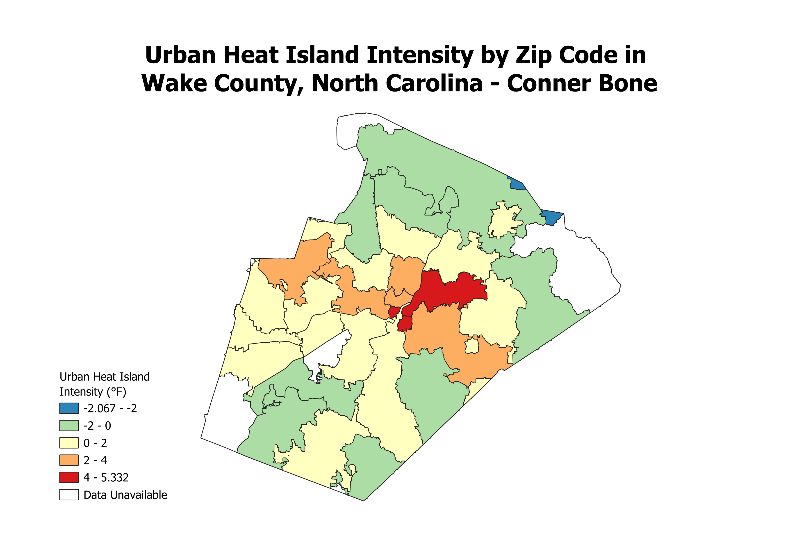

Homework 7
Urban Heat Island Intensity by Zip Code in Wake County

This map visualizes the urban heat island intensity of each zip
code in Wake County. In an increasingly warm and increasingly
urban world, the urban heat island phenomenon is becoming a larger
issue to our collective health and well-being every year. So,
quantifying and visualizing just how intense that phenomenon can be
across different parts of our urban areas (in this case, Wake County,
NC) can help us better understand it. With an improved understanding,
we'll better be able to mitigate the negative effects of the urban
heat island phenomenon and reduce its intensity through our urban
form.
Data Used
GeoJSON
Data Source
Cleaned CSV